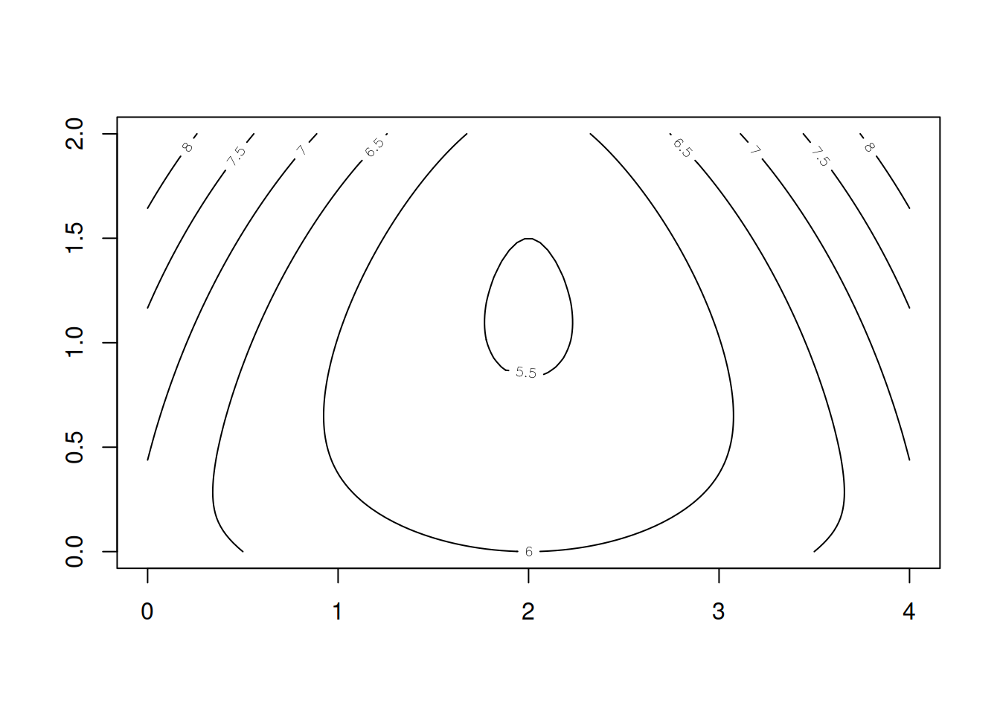

Capítulo 5 Metodologías cuali y cuantitativas
- Representación y georeferenciación y sistemas de proyección.
- La biblioteca ORLoca de Manuel Munoz-Marquez manuel.munoz@uca.es
- Localización por métodos cualitativos (RQDA)
- Localización basada en rankings (AHP)
- Localización basada en instancias geométricas (polígonos de Voronoi y Triangulación de Delaunay).
- Caso de estudios, localización de hospitales y vacunatorios de los refugiados en Siria
Tal como podemos intuir, después de la rivisión de los métodos geométricos, existen muchos métodos que utilizamos en ingeniería industrial que damos por ciertos, pero que en realidad son cunto menos débiles o poco robustos, e incluso sobresimplifaciones muy gruesas a la solución del problema. Ejemplo de ello es esa mínima distancia que aparece entre el punto de Fermat y el método del Baricentro, particularidades como la del límite de los 120° que invalidan a ambos métodos y que no se mencionan en la literatura de grado, etc. Otro caso interesante de analizar es el del ruteo mariposa que aún siendo muy rústico o tosco, otorga soluciones seudo óptimas que no difieren en más del 10% del óptimo local.
Sin dudas uno de los autores que más ha influido en el pensamiento económico del siglo XX y sore todo en el modo de encarar con soluciones aproximadas y simples los complejos problemas económicos y sociales es Alfred Weber [1868 - 1958].
Este autor tiene una estrecha relación con muchos de los modelos que aceptamos en nuestro campo profesional. Es un personake que destacó en Economía de la Innovación y vivió en un sigle de grandes transformaciones. De hecho nación en la región de Sajonia del Reuno de Prusia y murió en Heidelberg en Alemanis del Este. Irónicamente toda su vida transcurrió en la casa de sus padres y abuelos que nunca se movió de lugar y a lo largo del tiempo perteneció a tre países.
Weber era además de economista, sociólogo, geógrafo, geómetra, teórico de la cultura del arte y sobre la influencia que esta tenía en el desarrollo económico de las regiones basado en el potencial de innovación.
Muchos de los ejemplos que inspiran este curso están basados en sus libros y modelos posteriores a la etapa de a denominada Gripe Española posterior a la primera guerra mundial.
Junto a otro economista casi ingnorado en el siglo XX que recobra actualidad en el siglo XXI , nos referimos a Joseph Alois Schumpeter [1883-1950] cultivaron dentro de la Escuela Austriaca de Economía esta idea de no trabajar en Economía como si estuviesemos en Física. De hecho la ídea que subyace en la economía de la escuela austríaca es que se trata de una fenómeno social. La ecuaciones explican parte del problema, pero lo hacen si somos capaces de congelar el resto de la variables que influyen en los problemas, amenudo muy complejos ceteris paribus .
Weber planteó la idea de separar o clasificar a los métodos en dos categorías, sin que ello desmerezca su calidad. Utilizando el expresión de:
1- Métodos Jerárquicos / Cualitativos 2- Métodos Cuantitativos / Analíticos
5.1 Localización plana con orloca
Se comenzará con un método cuantitativo que tiene sus raíces en las aproximaciones geométricas. Sin embargo el método propuesto por esta biblioteca (mal llamada librería) es factible de ser resuelto con EDP. Solamente tenemos que imaginar un ecuación, propuesta por nosotros y verificar que al resolver el sistema de ecuaciones en derivadas parciales cumple con la ley fundamental que rige el fenómeno.
Es uso de las bibliotecas, tal como lo haremos también es parte del pensamiento filosófico. Thomas Kuhn (Filosofía Analítica y Las estructuras de las revoluciones científicas) [1922-1996] en su propuesta sobre los paradigmas es el que sugiere que podemos tomar un modelo que venga de un campo epistémico e investigar si su comportamiento es capaz de explicar lo que ocurre en otro campo epistémico muy distinto para el que gue concebido o construido. De hecho si esto ocurre significa que ambos campos están soportados por la misma ley y la formulación matemática exacta tienen la misma EDP.
Abordaremos ahora el estudio de una biblioteca, para entender como fue forjada y con ello colocarnos fuera del error de paradigma que no lleve a descubrir por la línea analítica la rueda que ya fue descubierta por la física.
ejemplo basado en texto y caso original de Manuel Munoz-Marquez
5.2 Introducción
En un problema de localización se busca encontrar la ubicación óptima de un servicio, o un conjunto de ellos, de forma que la calidad que dicho servicio presta a un conjunto de puntos de demanda sea, según cierta medida, óptimo. Algunos ejemplos de problemas de localización son:
Encontrar la ubicación óptima del almacén central de una red de distribución de mercancías para que se minimice el costo total de transporte
Encontrar la ubicación óptima de una ambulancia que debe atender a los pacientes de cierta región para que se minimice el tiempo en atender al paciente más lejano
Son numerosos los contextos en los que se plantean problemas de localización, debido a ello la teoría de localización ha sido objeto de gran atención en los últimos años, pudiendo decirse que es un tema de gran actualidad y vigencia. A ello contribuye la aparición de facetas del problema hasta ahora no estudiadas. Por ejemplo, junto a los ya clásicos criterios de minimización de costos, aparecen nuevos criterios: ambientales, sociales, calidad de vida, etc. Estas nuevas vertientes del problema hacen que sea un campo abierto de estudio.
El paquete que se presenta está dedicado a la resolución del problema de localizar un único punto en el plano usando como objetivo la minimización de la suma de las distancias ponderadas a los puntos de demanda. Nuevas versiones del paquete incluirán nuevos modelos de localización.
5.3 La clase de objetos loca.p
En un problema de localización plana el conjunto de puntos de demanda viene dado por las coordenadas de dichos puntos. Opcionalmente, se puede asignar a dichos puntos una ponderación, que da mayor importancia a unos puntos que a otros, dado que el objetivo que se considera es minimizar la suma ponderada de las distancias entre el punto de servicio y dicho conjunto demandante. Por ejemplo, si se busca la localización de un hospital comarcal, los puntos de demanda pueden ser las localidades a las que el hospital debe atender y las ponderaciones la población de cada localidad.
Para la resolución de estos problemas se ha definido una clase de objetos designada loca.p, de forma que un objeto loca.p almacena las coordenadas de los puntos de demanda y las ponderaciones de cada uno de los puntos. Cada objeto loca.p tiene tres slots, x e y que almacenan las coordenadas y w que almacena las ponderaciones. Cuando las ponderaciones no se den de forma explícita, se considerará que todos los puntos de demanda tienen igual importancia.
En el resto de esta sección se expondrá la forma de hacer las operaciones básicas con objetos loca.p.
Creación de objetos de clase loca.p Consideremos un problema de localización en el que el conjunto de puntos de demanda es :
(0,0) , (4,0) y (2,2). Para crear un objeto loca.p que represente a dicho conjunto, se puede hacer llamando a la función constructora usando como argumentos el vector con las coordenadas x y el vector con las coordenadas y del conjunto de puntos:
library(orloca)## Loading required package: png## Loading required package: ucminfloca.p(c(0, 4, 2), c(0, 0, 2))## An object of class "loca.p"
## Slot "x":
## [1] 0 4 2
##
## Slot "y":
## [1] 0 0 2
##
## Slot "w":
## [1] 1 1 1
##
## Slot "label":
## [1] ""o alternativamente:
loca.p(x = c(0, 4, 2), y = c(0, 0, 2))## An object of class "loca.p"
## Slot "x":
## [1] 0 4 2
##
## Slot "y":
## [1] 0 0 2
##
## Slot "w":
## [1] 1 1 1
##
## Slot "label":
## [1] ""El constructor tiene dos argumentos opcionales más, el tercero w se usa para especificar un vector de pesos y el cuarto para especificar una etiqueta que se usará para identificar el objeto. Si, usando el mismo conjunto de puntos, se quiere asignar los pesos 1, 1, 3, a dichos puntos y la etiqueta Problema 1, se usa:
loca.p(x = c(0, 4, 2), y = c(0, 0, 2), w = c(1, 1, 3), label = "Problema 1")## An object of class "loca.p"
## Slot "x":
## [1] 0 4 2
##
## Slot "y":
## [1] 0 0 2
##
## Slot "w":
## [1] 1 1 3
##
## Slot "label":
## [1] "Problema 1"Un objeto loca.p también se puede obtener convirtiendo un objeto data.frame que tenga las columnas x e y, y opcionalmente w. Partiendo del data.frame
¿Que es un dataframe? Una cuestión habitual es preguntarse en qué casos debes usar un data frame o una matriz en R. Los data frames son estructuras de datos muy similares a las matrices, pero en el caso de los data frames puedes tener diferentes tipos de datos dentro de las columnas. En consecuencia, la diferencia es que las matrices almacenan tipos de datos homogéneos mientras que los data frames almacenan tipos de datos heterogéneos. Como ejemplo, supón que tienes los siguientes datos:
Producto <- c("Zumo", "Queso", "Yogurt")
Seccion <- c("Bebidas", "Productos lácteos", "Lácteos líquidos")
Unidades <- c(2, 1, 10)Puedes almacenar esas variables como matriz utilizando la función cbind: (column bind o pegar por columnas) , tambien existe rbind.
refrigerados <- cbind(Producto, Seccion, Unidades)
refrigerados## Producto Seccion Unidades
## [1,] "Zumo" "Bebidas" "2"
## [2,] "Queso" "Productos lácteos" "1"
## [3,] "Yogurt" "Lácteos líquidos" "10"Sin embargo, puedes notar que el resultado no es satisfactorio, ya que todas las variables se han transformado a la clase caracter. En cambio, si usas la función data.frame, mantendrás el tipo original de las variables.
Este mismo problema ocurre cuando intentas cargar datos de dos versiones de excle distintas o que tienen el sistema operativo en diferentes idiomas.
Tu verás un número pero para excel y R-Cran estos son en realidad tratados como textos.
n R es muy sencillo crear un nuevo data frame. Puedes unir tus variables haciendo uso de la función data.frame para convertir tus datos a la estructura de datos de tipo data frame. Primero, necesitas tener algunas variables almacenadas para crear el marco de datos en R. En este ejemplo vamos a definir algunas variables de datos meteorológicos. Ten en cuenta que todos los vectores tienen la misma longitud.
Latitud <- c(20.37, 18.56, 18.4, 21.96, 29.53, 28.16,
36.38, 36.62, 40.03, 27.59, 22.15, 19.85)
Longitud <- c(88, 86, 81, 79, 80, 78,
71, 69, 78, 82, 85, 83)
T_media_F <- c(72, 33.9, 37.5, 36.6, 31.0, 16.6,
1.2, 6.8, 36.8, 30.8, 38.5, 22.7)
mes <- c("enero", "febrero", "marzo", "abril", "mayo", "junio",
"julio", "agosto", "septiembre", "octubre", "noviembre", "diciembre")Para unir los datos puedes usar la función data.frame. En este ejemplo, vamos a almacenar el data frame en una variable llamada datos:
Frigorificos <- data.frame(Lat = Latitud, Lng = Longitud, TF = T_media_F, Mes = mes)
names(Frigorificos) # Nombres de las variables (columnas)## [1] "Lat" "Lng" "TF" "Mes"head(Frigorificos)## Lat Lng TF Mes
## 1 20.37 88 72.0 enero
## 2 18.56 86 33.9 febrero
## 3 18.40 81 37.5 marzo
## 4 21.96 79 36.6 abril
## 5 29.53 80 31.0 mayo
## 6 28.16 78 16.6 junioEn segundo lugar, puedes utilizar la función summary que devolverá un resumen estadístico de las variables (columnas) del conjunto de datos.
summary(Frigorificos)## Lat Lng TF Mes
## Min. :18.40 Min. :69.0 Min. : 1.20 Length:12
## 1st Qu.:20.24 1st Qu.:78.0 1st Qu.:21.18 Class :character
## Median :24.87 Median :80.5 Median :32.45 Mode :character
## Mean :26.63 Mean :80.0 Mean :30.37
## 3rd Qu.:31.24 3rd Qu.:83.5 3rd Qu.:36.98
## Max. :40.03 Max. :88.0 Max. :72.00Crearemos una matriz para un problema simple de localización
d <- matrix(c(0,0,1,10,0,3,2,8,1), ncol=3 , byrow=TRUE)
d## [,1] [,2] [,3]
## [1,] 0 0 1
## [2,] 10 0 3
## [3,] 2 8 1¿Cómo harías para pedirle a R que te muestre el valor 8 de la matriz?
Añadiremos nombres a filas y columnas
colnames(d) <- c("X","Y","W")
rownames(d)<- c(1,2,3)
d## X Y W
## 1 0 0 1
## 2 10 0 3
## 3 2 8 1se puede construir un objeto loca.p llamando a la función as:
as(d, "loca.p")## An object of class "loca.p"
## Slot "x":
## 1 2 3
## 0 10 2
##
## Slot "y":
## 1 2 3
## 0 0 8
##
## Slot "w":
## 1 2 3
## 1 3 1
##
## Slot "label":
## [1] ""o alternativamente:
as.loca.p(d)## An object of class "loca.p"
## Slot "x":
## 1 2 3
## 0 10 2
##
## Slot "y":
## 1 2 3
## 0 0 8
##
## Slot "w":
## 1 2 3
## 1 3 1
##
## Slot "label":
## [1] ""Recíprocamente, un objeto loca.p se puede convertir en un objeto data.frame mediante:
p1 <- loca.p(x = c(0, 4, 2), y = c(0, 0, 2), w = c(1, 1, 3), label = "Problema 1")
as(p1, 'data.frame')## w x y
## 1 1 0 0
## 2 1 4 0
## 3 3 2 2o alternativamente
as.data.frame(p1)## w x y
## 1 1 0 0
## 2 1 4 0
## 3 3 2 2En las conversiones, el slot label del objeto loca.p se almacena como un atributo del objeto data.frame. La etiqueta se puede leer y modificar accediendo a ellos:
p1@label## [1] "Problema 1"dp1 <- as.data.frame(p1)
attr(dp1, "label")## [1] "Problema 1"Los objetos loca.p también pueden transformase en o construirse desde objetos de tipo matrix tal como vimos con los frigoríficos.
Generación aleatoria de objetos de clase loca.p Se pueden crear objetos aleatorios de clase loca.p usando la función rloca.p. El primer argumento, n indica el número de puntos a generar. Por defecto, dichos puntos se generan en el cuadrado unidad [0,1]×[0,1]
. Así, para generar un objeto loca.p con 5 puntos en el cuadrado unidad, se usa:
set.seed(161236)
rloca.p(5)## An object of class "loca.p"
## Slot "x":
## [1] 0.12405385 0.50263749 0.15097058 0.02051109 0.57587429
##
## Slot "y":
## [1] 0.2435999 0.5788917 0.7562588 0.1144796 0.2721178
##
## Slot "w":
## [1] 1 1 1 1 1
##
## Slot "label":
## [1] ""Los argumentos xmin, xmax, ymin e ymax permiten especificar el rectángulo en el que se generarán los puntos. Además, la función rloca.p permite especificar la etiqueta para el nuevo objeto. Por ejemplo, para generar los puntos en el rectángulo [−1,1]×[−5,5]
con etiqueta “Problema Tania & Miguelina” se usa:
rloca.p(5, xmin = -1, xmax = 1, ymin = -5, ymax = 5, label = "Problema Tania & Miguelina")## An object of class "loca.p"
## Slot "x":
## [1] -0.9452062 0.5769137 0.8819392 -0.6214939 -0.1391079
##
## Slot "y":
## [1] -3.325587 3.931197 -4.497122 -1.304617 -2.815923
##
## Slot "w":
## [1] 1 1 1 1 1
##
## Slot "label":
## [1] "Problema Tania & Miguelina"Intenta poner xmax, xmin, ymax, ymin con valores de la latitud y longitud extrema de los puntos y podrás usar google maps o bing como teselas.
Los puntos generados por la función rloca.p se pueden generar en grupos repartidos espacialmente. El argumento groups permite especificar el número de grupos mediante un número o el número de puntos en cada grupo a través de un vector. En este segundo caso, el valor dado al argumento n se ignora. Para generar aleatoriamente un conjunto de demanda con tres grupos iguales:
rloca.p(9, groups = 3, label = "Refugiados en Siria")## An object of class "loca.p"
## Slot "x":
## [1] 1.0435201 1.1954117 1.6470744 0.7868431 0.7648655 0.8508291 0.7502594
## [8] 1.0788618 1.1116052
##
## Slot "y":
## [1] 1.1400092 0.6076905 0.8163944 1.3954599 1.3186699 0.9262516 0.9044921
## [8] 0.9464590 0.7384576
##
## Slot "w":
## [1] 1 1 1 1 1 1 1 1 1
##
## Slot "label":
## [1] "Refugiados en Siria"para tres grupos desiguales:
rloca.p(groups = c(2, 2, 5), label = "Agua Emiliano")## An object of class "loca.p"
## Slot "x":
## [1] 1.6689680 0.9978501 0.5592493 0.4330953 0.7297446 1.1752629 0.9298473
## [8] 0.4017964 0.8527443
##
## Slot "y":
## [1] 0.9097321 0.4319344 1.4223225 1.4137017 0.5544933 1.2903588 0.4965480
## [8] 1.0362726 0.4947184
##
## Slot "w":
## [1] 1 1 1 1 1 1 1 1 1
##
## Slot "label":
## [1] "Agua Emiliano"Para generar los datos en grupos se genera en primer lugar un desplazamiento del centro de cada grupo y luego se generan los puntos sumando a cada punto el desplazamiento que corresponda a su grupo. Por tal motivo, groups = 1 no es equivalente a no especificar dicho parámetro. El desplazamiento de los centros se puede especificar mediante los argumentos xgmin, xgmax, ygmin e ygmax. Para ilustrar mejor el funcionamiento de la función se puede pintar el resultado:
rl <- rloca.p(60, groups = 3, xmin = -10, xmax = 10, ymin = -10, ymax = 10, xgmin = -1, xgmax = 1, ygmin = -1, ygmax = 1, label = "Tres grupos")
plot(rl)
5.3.1 Resumiendo los datos
Para obtener un resumen numérico de un objeto loca.p se puede usar la función summary:
summary(rl)## label n xmin xwmean
## "Tres grupos" "60" "-9.54649574030191" "0.172239909491812"
## xmax ymin ywmean ymax
## "9.66257251426578" "-9.88218353176489" "-0.55051479760247" "9.99047618778422"REcuerda los valores máximnos y mínimos de \(X , Y\) , serán de utilidad más tarde
En el resumen se muestran los valores mínimo, máximo y medio de ambas coordenadas, además de la medias ponderadas de las coordenadas de los puntos para cada componente.
Distancia media ponderada
Dado un objeto loca.p se puede evaluar la distancia ponderada desde un punto dado. Así mismo, se puede evaluar el gradiente de dicha función y se puede resolver el problema de minimizar dicho objetivo.
Evaluación
La función distancia media ponderada se denomina en el paquete distsum, dado un punto, por ejemplo: (3,1)
se puede evaluar la distancia media ponderada a un objeto loca.p:
pt3 <- loca.p(x = c(0, 4, 2), y = c(0, 0, 2), label = "Tres puntos")
distsum(o = pt3, x = 3, y = 1)## [1] 5.990705También se puede calcular el gradiente de distsum llamado distsumgra:
distsumgra(o = pt3, x = 3, y = 1)## [1] 0.9486833 0.31622785.4 Resolución
Para encontrar la solución óptima al problema de localización anterior se usa la función distsummin:
s <- distsummin(pt3)
s## [1] 2.00000 1.15332Evaluando la función y el gradiente en el punto obtenido
distsum(o = pt3, x = s[1], y = s[2])## [1] 5.464102distsumgra(o = pt3, x = s[1], y = s[2])## [1] 3.110246e-07 -8.970172e-04Como se puede comprobar por el valor del gradiente, la solución encontrada es un óptimo local y al ser la función objetivo convexa un óptimo global.
Estas tres funciones admiten un argumento opcional lp, si se omite este argumento, se utiliza la norma euclídea, es decir, la norma l2
, si se especifica un valor para lp se utilizará la norma lp para dicho valor de p .
Obsérvese que si se especifica lp = 2 se utiliza el algoritmo genérico para la norma \(l_p\) con p igual a 2. La utilización del algoritmo genérico requiere un mayor esfuerzo computacional para la resolución del problema, por lo que no es recomendable especificar dicho argumento para usar la norma euclídea.
5.4.1 Dibujo o ploteo
Tanto los objetos loca.p como la función objetivo pueden representarse en un gráfico. Para la función objetivo se proporciona una representación basada en curvas de nivel y otra en un gráfico 3D.
Dibujar un objeto loca.p
La gráfica de un objeto loca.p consiste en representar en el plano el diagrama de dispersión del conjunto de puntos de demanda usando la función plot:
plot(pt3)Gráfico de curvas de nivel El gráfico de curvas de nivel se realiza con la función contour:
contour(pt3)
Zooming
En el gráfico se puede observar cómo la función alcanza el mínimo en el punto calculado anterioremente. Ampliando:
contour(pt3, xlim = c(1.9, 2.1), ylim = c(1, 1.2), levels = c(5.465, 5.47, 5.475))Las funciones plot y contour admiten un argumento opcional img que permite especificar un gráfico raster que se usará como fondo del gráfico.
5.4.2 Gráfico en 3D
Análogamente se puede realizar una representación en tres dimensiones usando la función persp:
persp(pt3)Podemos agregar estilos
persp(pt3, col = "lightblue", theta = 45, ltheta = 120, shade = 0.75, ticktype = "detailed")Las tres funciones de representación pasarán los restantes argumentos opcionales a la función genérica plot.
5.5 Ejemplo de localización en Andalucía
Se cargan los datos de las capitales andaluzas y se convierte en un objeto de clase loca.p:
data(andalusia)
o <- loca.p(x=andalusia$x[1:8], y=andalusia$y[1:8])
o## An object of class "loca.p"
## Slot "x":
## [1] -2.467500 -6.283333 -4.778889 -3.597500 -6.963056 -3.766667 -4.420000
## [8] -5.996389
##
## Slot "y":
## [1] 36.84000 36.53333 37.88472 37.17583 37.26389 37.76667 36.71944 37.38306
##
## Slot "w":
## [1] 1 1 1 1 1 1 1 1
##
## Slot "label":
## [1] ""Se calculan los valores límite para el gráfico:
xmin <- min(andalusia$x)
ymin <- min(andalusia$y)
xmax <- max(andalusia$x)
ymax <- max(andalusia$y)Se carga el mapa de Andalucía y se representan los puntos con el mapa de fondo
file = system.file('img', 'andalusian_provinces.png', package='orloca')
img = readPNG(file)
plot(o, img=img, main='Andalucía', xleft=xmin, ybottom=ymin, xright=xmax, ytop=ymax)El gráfico de curvas de nivel es:
contour(o, img=img, main='Andalucía', xleft=xmin, ybottom=ymin, xright=xmax, ytop=ymax)La solución óptima del problema de localización con las 8 capitales, ocho primeras filas, se obtiene:
andalusia.loca.p <- loca.p(andalusia$x[1:8], andalusia$y[1:8])
sol <- distsummin(andalusia.loca.p)
sol## [1] -4.610679 37.248691La solución óptima que proporciona el algoritmo está localizada a unos 35 Km al norte de Antequera. Recuérdese que usualmente se considera a Antequera como el centro geográfico de Andalucía. El gráfico presenta la solución como un punto de color rojo:
contour(o, img=img, main='Andalucía', xleft=xmin, ybottom=ymin, xright=xmax, ytop=ymax)
points(sol[1], sol[2], type='p', col='red')Por simplicidad en el ejemplo, no se ha tenido en cuenta la curvatura terrestre.
5.6 Localización de hospitales para refugiados de Siria
Este trabajo ha sido publicado originalmente por Julien Lebeau in R bloggers en 2014Mediante una comunicación por correo con Julien hemos acordado liberar estos datos que por cuestiones de seguridad de los refugiados no podemos actualizar.
Anteriormente publicamos sobre la ubicación de los asentamientos de refugiados y cómo habían aumentado en densidad con el tiempo y en número. Dado que muchas ONG y organizaciones sin fines de lucro trabajan en el área, están brindando la asistencia que tanto necesitan a las personas que viven alrededor del área de Zahle. Quería volver a mirar el área debido al aliento de la crisis con Siria y la posible ubicación a largo plazo de sirios en el Líbano. En estos campamentos se han establecido servicios como clínicas, que pueden haber tenido en cuenta o no la capacidad de atender a los refugiados (estas consideraciones de planificación pueden no ser posibles en estas circunstancias) en ubicaciones óptimas. Para la planificación a largo plazo, estas son consideraciones más importantes por parte de quienquiera que se convierta en el órgano de gobierno de estos asentamientos.
A continuación se muestra un mapa de las ubicaciones de los asentamientos en el distrito de Zahle proporcionado por el Portal de datos de Siria de la ONU. Cada punto representa varias tiendas de campaña en el asentamiento.
Detectado con imágnes del satelite SENTINEL 3 - Campamentos Sirios
La consideración general de la ubicación de la clínica se basará en el nivel de servicio por persona. Con base en un criterio general de tener 1 clínica por cada 15,000-20,000 personas, podemos asignar alrededor de 4 clínicas al área. El (los) método (s) para determinar estas ubicaciones utilizó el método kmeans para determinar el punto medio en un grupo y un algoritmo de análisis de ubicación que considera los pesos de los puntos para determinar una ubicación (agradecimiento especial a los autores de orloca, kmeans y al siempre útil ggplot2 paquetes en R).
Para estos fines, la latitud y la longitud de las ubicaciones de los asentamientos de tiendas de campaña son las más útiles. Aquí los asentamientos o puntos están coloreados según la población de cada emplazamiento.
5.7 Detalles de la operación
Como puede ver, algunos asentamientos albergan a muchas más personas que otros y el asentamiento promedio es de aproximadamente 187 personas (nuevamente estamos hablando de muchas tiendas de campaña por asentamiento). Dado que la distribución de personas en los asentamientos no es igual, consideramos el “peso” (población del asentamiento) para cada punto al determinar la ubicación de una clínica.
5.8 Consideraciones Técnicas y Simplificación
Las clínicas están ubicadas más cerca de los asentamientos con mayor número de habitantes. En el área central de Zahle, estas ubicaciones están aproximadamente en el medio desde el punto de vista de Latitude. Otras ubicaciones son quizás menos intuitivas si la población de no se consideraron los asentamientos. Obviamente, con más clínicas estos puntos cambiarían, pero esto se considera un nivel de servicio mínimo.
Usar solo este método para determinar la ubicación de una clínica sería problemático desde el punto de vista de lo que realmente está en el suelo con referencia al acceso a la calle u otras contingencias locales. La planificación de instalaciones médicas es más un ejercicio para consideraciones de planificación a largo plazo que la medicina de emergencia o de socorro, que puede tener objetivos a más corto plazo, como brindar atención. Comenzar teniendo en cuenta el número de personas que reciben servicios y su ubicación son consideraciones importantes, ya que estos campamentos se convierten en obligaciones potencialmente a más largo plazo.
5.10 Carga de bibliotecas (library) necesarias
library(readr)
library(readxl)
library(stats)
library(ggplot2)
library(orloca)
library(leaflet)
library(leaflet.extras)5.11 Obtención de Datos Oficiales
# Este archivo ha sido eliminado por Julien
##Get file from UNHCR Lebanon Data Portal
#url<-"https://www.dropbox.com/sh/6gw6c971791i7za/AAAHU64Hu6-qJHZEZBWdeKPLa/2.%20Mapping%20and%20P-codes/List%20of%20Informal%20Settlements_2014_09_01.xlsx?dl=1"
#download.file(url,destfile="List of Informal Settlements_2014_09_01.xlsx",mode="wb")
##Read .xlsx file
getwd()## [1] "/media/rpalma/OS/AAA_Datos/2021/Posgrado/Di3/Curso Facitlity Location/Apunte"Si piensan utilizar el archivo de datos depurado tents.csv, aseguraté de guardarlo en esta carpeta de tu PC.
Dado que el portal actualiza constantemente los datos hemos utilizado una copia del archivo alojada en themys.sid.uncu.edu.ar .
Te recomienod que descargues a tu PC el archivo y lo abras con excel.
https://themys.sid.uncu.edu.ar/rpalma/R-cran/tents2.csvAmbos procedimiento son válidos, pero lo bueno de tener los datos en “la nube”, tendrás la ventaja que representa que cada vez que alguien agregue un registro nuevo al generar la en forma automática el reporte, tendrás siempre los datos actualizados sin modificar este archivo Rmd.
library(readr)
tents <- read_delim("https://themys.sid.uncu.edu.ar/rpalma/R-cran/tents2.csv", ";", escape_double = FALSE,
col_types = cols(Latitude = col_number(),
Longitude = col_number(), `Number of tents` = col_number(),
`Number of Individuals` = col_number(),
`Number of Latrines` = col_number(),
`Number of 1000 Litre Tanks` = col_number()),
trim_ws = TRUE)Filtrar solamente emplazamientos del distrito Zahle y agrupar (clusterizar) utilizando la metodología kmeans.
##Get only Zahle District Settlements
zahle<-tents[which(tents$District=="Zahle"),]
##Kmeans based on latitude of settlement, k=4
kmeanslat<-kmeans(zahle$Longitude,4)K-means es un método de agrupamiento, que tiene como objetivo la partición de un conjunto de n observaciones en k grupos en el que cada observación pertenece al grupo cuyo valor medio es más cercano. Es un método utilizado en minería de datos.
La agrupación del conjunto de datos puede ilustrarse en una partición del espacio de datos en celdas de Voronoi.
El problema es computacionalmente difícil (NP-hard). Sin embargo, hay eficientes heurísticas que se emplean comúnmente y convergen rápidamente a un óptimo local. Estos suelen ser similares a los algoritmos expectation-maximization de mezclas de distribuciones gausianas por medio de un enfoque de refinamiento iterativo empleado por ambos algoritmos. Además, los dos algoritmos usan los centros que los grupos utilizan para modelar los datos, sin embargo k-medias tiende a encontrar grupos de extensión espacial comparable, mientras que el mecanismo expectation-maximization permite que los grupos tengan formas diferentes.
¿Como funciona K-means?
Dado un conjunto de observaciones \((x1, x2, …, xn)\), donde cada observación es un vector real de d dimensiones, k-mean construye una partición de las observaciones en k conjuntos \((k ≤ n)\) a fin de minimizar la suma de los cuadrados dentro de cada grupo (WCSS): \[S = {S1, S2, …, Sk}\] Tal que:
\[{\displaystyle {\underset {\mathbf {S} }{\operatorname {arg\,min} }}\sum _{i=1}^{k}\sum _{\mathbf {x} _{j}\in S_{i}}\left\|\mathbf {x} _{j}-{\boldsymbol {\mu }}_{i}\right\|^{2}}\]
donde \(\mu_i\) es la media de puntos en \(Si\).
Flujo del algoritmo
Algoritmo estándar El algoritmo más común utiliza una técnica de refinamiento iterativo. Debido a su ubicuidad a menudo se llama el algoritmo k-medias, también se le conoce como algoritmo de Lloyd, sobre todo en la comunidad informática.
Dado un conjunto inicial de k centroides \(m1(1),…,mk(1)\) (ver más abajo), el algoritmo continúa alternando entre dos pasos:
Paso de asignación: Asigna cada observación al grupo con la media más cercana (es decir, la partición de las observaciones de acuerdo con el diagrama de Voronoi generado por los centroides).
\[{\displaystyle S_{i}^{(t)}={\big \{}x_{p}:{\big \|}x_{p}-m_{i}^{(t)}{\big \|}\leq {\big \|}x_{p}-m_{j}^{(t)}{\big \|}\ \forall \ 1\leq j\leq k{\big \}}}\]
Donde cada \({\displaystyle x_{p}}x_{p}\) va exactamente dentro de un \({\displaystyle S_{i}^{(t)}}S^{(t)}_i\), incluso aunque pudiera ir en dos de ellos. Paso de actualización: Calcular los nuevos centroides como el centroide de las observaciones en el grupo.
\[ m_{i}^{(t+1)}={\frac {1}{|S_{i}^{(t)}|}}\sum _{ {x} _{j}\in S_{i}^{(t)}}\]
El algoritmo se considera que ha convergido cuando las asignaciones ya no cambian.
Los métodos de inicialización de Forgy y Partición Aleatoria son comúnmente utilizados. El método Forgy elige aleatoriamente k observaciones del conjunto de datos y las utiliza como centroides iniciales. El método de partición aleatoria primero asigna aleatoriamente un clúster para cada observación y después procede a la etapa de actualización, por lo tanto calcular el clúster inicial para ser el centro de gravedad de los puntos de la agrupación asignados al azar. El método Forgy tiende a dispersar los centroides iniciales, mientras que la partición aleatoria ubica los centroides cerca del centro del conjunto de datos. Según Hamerly et al, el método de partición aleatoria general, es preferible para los algoritmos tales como los k-medias armonizadas y fuzzy k-medias. Para expectation maximization y el algoritmo estándar el método de Forgy es preferible.
5.11.1 Agregar grupos al dataset
##Add to data frame
zahle$groups<-kmeanslat$cluster
##Subset data based on Groups
zahle1<-zahle[which(zahle$groups==1),]
zahle2<-zahle[which(zahle$groups==2),]
zahle3<-zahle[which(zahle$groups==3),]
zahle4<-zahle[which(zahle$groups==4),]Agregar emplazamiento de clínicas en el centroide de cada cluster
##Make central points based on settlement population/weight and solve optimzation problem
loca1<-loca.p(x=(zahle1$Longitude),y=(zahle1$Latitude),w=(zahle1$`Number of Individuals`))
point1<-zsummin(loca1)## Warning in zsummin(loca1): The function zsum is deprected and could be removed
## in next version of the package. Use distsum instead.##Group 2 did not converge so we will settle with kmeans with k=1
group2lat<-kmeans(zahle2$Latitude,1)
group2lon<-kmeans(zahle2$Longitude,1)
point2<-data.frame(group2lon$centers,group2lat$centers)
##Continue with optimization based on weights of other groups
loca3<-loca.p(x=(zahle3$Longitude),y=(zahle3$Latitude),w=zahle3$Updated.number.of.Individual)## Warning: Unknown or uninitialised column: `Updated.number.of.Individual`.point3<-zsummin(loca3,max.iter=200)## Warning in zsummin(loca3, max.iter = 200): The function zsum is deprected and
## could be removed in next version of the package. Use distsum instead.loca4<-loca.p(x=(zahle4$Longitude),y=(zahle4$Latitude),w=zahle4$Updated.number.of.Individual)## Warning: Unknown or uninitialised column: `Updated.number.of.Individual`.point4<-(zsummin(loca4,max.iter=100000))## Warning in zsummin(loca4, max.iter = 1e+05): The function zsum is deprected and
## could be removed in next version of the package. Use distsum instead.##Transpose and Make data frame for all points
colnames(point2)<-c("V1","V2")
points<-data.frame(do.call(rbind,list(point1,point2,point3,point4)))
colnames(points)<-c("Lon","Lat")5.12 Gráfico sobre mapa
##Map on ggplot/ggmap
ggplot(aes(Longitude,Latitude,color=groups),data=zahle)+geom_point()+geom_point(aes(Lon,Lat),color="red",size=8,alpha=.5,data=points)5.13 Mapa Georeferenciado
Representaremos interativamente sólo las 20 primeras tiendas. Por cada una de ellas en el pop up con el mouse se muestran la cantidad de tiendas. Al hacer click muestra la cantidad de personas.
refugiados <- data.frame(lat=tents$Latitude, long=tents$Longitude, mag=tents$`Number of Individuals`, tiendas=tents$`Number of tents` ,stringsAsFactors=FALSE)
leaflet(data = refugiados[1:20, ]) %>% addTiles() %>%
addMarkers(~long, ~lat, popup = ~as.character(mag), label = ~as.character(tiendas))5.14 Mapa sobrecargado
Como podemos ver con sólo 80 de los casi 1000 tiendas re refugiados el mapa luce saturado. Veremos más adelante como mejorar esto con la técnica de clusters.
refugiados <- data.frame(lat=tents$Latitude, long=tents$Longitude, mag=tents$`Number of Individuals`, tiendas=tents$`Number of tents` ,stringsAsFactors=FALSE)
leaflet(data = refugiados[300:720, ]) %>% addTiles() %>%
addMarkers(~long, ~lat, popup = ~as.character(mag), label = ~as.character(tiendas))5.15 Mapa con datos clusterizados
refugiados <- data.frame(lat=tents$Latitude, long=tents$Longitude, mag=tents$`Number of Individuals`, tiendas=tents$`Number of tents` ,stringsAsFactors=FALSE)
leaflet(data = refugiados[300:750, ]) %>% addTiles() %>% addMarkers(
clusterOptions = markerClusterOptions())## Assuming "long" and "lat" are longitude and latitude, respectively5.16 Ejemplo de ruteo
Descarga el archivo ruteo_imposible.csv y guárdalo en una carpeta facil de recordar (ejemplo c:/datos)
https://themys.sid.uncu.edu.ar/rpalma/R-cran/Siria/ruteo_imposible.csv
Revisaremos el contenido del archivo con el comando View() o usando el menú de R-Cran.
library(readr)
ruteo_imposible <-read_delim("https://themys.sid.uncu.edu.ar/rpalma/R-cran/Siria/ruteo_imposible.csv",
";", escape_double = FALSE, trim_ws = TRUE)## Warning: Missing column names filled in: 'X1' [1]##
## ── Column specification ────────────────────────────────────────────────────────
## cols(
## X1 = col_character(),
## Hyatt = col_character(),
## Intercontinental = col_number(),
## `Raices Aconcagua` = col_character(),
## `Huentala/Sheraton` = col_character(),
## Bohemia = col_number(),
## `H Argentino` = col_character(),
## `Casa Glebinias` = col_character(),
## `Lares de Chacras` = col_character(),
## `Posada Verde Oliva` = col_number(),
## Esplendor = col_number(),
## `Club Tapiz` = col_number(),
## `Finca Adalgisa` = col_character(),
## `Portal Suites` = col_character(),
## Garage = col_character()
## )Este archivo pertenece a un emprendimiento exitoso de unos alumnos que ofrece a pasajeros de hoteles recorridos por las bodegas utilizando buses de pasajeros que tienen recorridos que por contrato deben ser cubiertos, pero tienen baja demanda en determinados horarios.
A efectos de hacer más simple el análisis tomaremos un conjunto reducido que involucra los hoteles y los destinos hasta totalizar 14.
Tomaremos la fila 1 a 14 y las columnas 2 a 15 (eliminamos una culumna que tienen el número de dato o registro que no nos es útil)
Cada celda tiene el costo asociado que implica desplazarse desde una fila a una columna.
Como queremos evitar que se tomen tramos en los que la tura sale desde un hotel y termina en el mismo hotel, la diagonal principal tiene un costo ficticio extremadamente elevado. Esto evita que el algoritmo lo tome.
distancia <- ruteo_imposible[1:14,2:15]
distancia## # A tibble: 14 x 14
## Hyatt Intercontinental `Raices Aconcagua` `Huentala/Sheraton` Bohemia
## <chr> <dbl> <chr> <chr> <dbl>
## 1 9999 56 1,3 1,3 15
## 2 5,6 9999 4,7 4,5 71
## 3 1,3 47 9999 1 17
## 4 1,3 45 1 9999 15
## 5 1,5 71 1,7 2,3 9999
## 6 0,5 65 0,9 1,3 14
## 7 17,3 193 17 17,4 161
## 8 14,8 173 14 14,8 134
## 9 15 102 15 15 155
## 10 16,4 151 15,9 16,7 164
## 11 18,4 172 18,4 18,4 185
## 12 17 171 16,6 17 156
## 13 0,5 57 0,9 0,5 22
## 14 0,5 58 1,5 1,5 17
## # … with 9 more variables: H Argentino <chr>, Casa Glebinias <chr>,
## # Lares de Chacras <chr>, Posada Verde Oliva <dbl>, Esplendor <dbl>,
## # Club Tapiz <dbl>, Finca Adalgisa <chr>, Portal Suites <chr>, Garage <chr>5.16.1 Matriz de asignacion
Construiremos una matriz de asignación en la que si aparece un uno en cierta celda, esto implica que usaremos un tramo de la ruta que va desde la fila hasta la columna.
De este modo si la fila 4 tiene un uno en la columna 8, esto implica que la ruta utilizará una salida desde el Hotel Hayatt hasta la Bodega Esplendor.
Esto que estamos construyendo en realidad representa una solución posible al pobrlema, pero no es la que tiene costos mínimo.
asigna <- matrix (0, nrow = 14 , ncol = 14)
for (i in 1:14) {
for (j in 1:14) {
ifelse(i==j, asigna[i,j] <- 1, asigna[i,j] <-0)
}
}Del mismo modo crearemos una matriz de distancias numérica
distancia_m <- data.matrix(distancia)Cálculo del costo
mat_costo <- distancia_m * asigna
costo <- 0
for (i in 1:14) {
for (j in 1:14) {
costo <- costo + mat_costo [i,j]
}
}
costo## Hyatt
## 50104De este modo hemos encontrado una secuencia de tramos que van desde cada instancia hacia el nodo que está adyacente en la mztriz. No se trata de un costo mínimo, sino de un caso de ruteo probable. (diagonal principal llena de unos)
La secuencia de ruteo se puede expresear matemáticamente como
\[ S [ 1,2,3,4, ... ,12,13,14]\]
Asignación combinatoria
Trabajaremos con un set de 9 destinos para acelerar los cálculos
Dejaremos como ejercicio el trabajo de realizar los cálculos con los 14 destinos para resolver en clase.
Comezaremos generando una nueva matriz de asignación vacía
asigna <- matrix (0, nrow = 14 , ncol = 14)
for (i in 1:14) {
for (j in 1:14) {
asigna[i,j] <- 0
}
}Generación de combinaciones
Vamos a construir una colección de secuencias que en lugar se ser la secuencia la que utilizamos en el caso anterior sean todas las posibles permutaciones de 9 elementos tomados de a nueve. Es claro que si analizamos todas estas posibles combinaciones encontraremos dentro de ellas la que corresponde al costo mínimo.
library(gtools)
permutaciones <- permutations(9, 9, set = TRUE, repeats.allowed = FALSE)
# hemos generado las permutaciones sin repeticiónA efectos de no poner lenta la generación del apunto utilizaremos una muestra de permutaciones y calcularemos el costo en la matriz de asignación
poblacion <- nrow(permutaciones)
poblacion## [1] 362880muestra <- sample(seq(1,poblacion),50, replace=FALSE)
muestra## [1] 320458 108033 256501 295097 137869 170884 185670 75540 174662 357089
## [11] 343596 224837 249888 137124 38560 85026 75714 335018 148990 115973
## [21] 278826 48150 72307 333787 153258 351489 110467 87322 263995 313168
## [31] 220455 320201 276478 32766 273332 147032 228811 340880 111972 309799
## [41] 218438 268708 211545 25903 148992 303113 262333 234466 300060 221372Calculo de costos
Recuperaremos los vectores seleccionados en la muestra
p <- permutaciones[muestra, ]
p## [,1] [,2] [,3] [,4] [,5] [,6] [,7] [,8] [,9]
## [1,] 8 9 5 1 4 3 6 7 2
## [2,] 3 7 5 1 4 6 8 2 9
## [3,] 7 3 9 2 5 6 1 4 8
## [4,] 8 3 5 9 1 6 7 2 4
## [5,] 4 5 3 6 9 7 1 2 8
## [6,] 5 2 9 4 1 3 7 8 6
## [7,] 5 6 8 9 2 1 7 4 3
## [8,] 2 8 9 7 4 3 6 5 1
## [9,] 5 3 7 6 4 8 1 9 2
## [10,] 9 7 6 8 4 3 5 1 2
## [11,] 9 5 2 3 4 6 8 7 1
## [12,] 6 5 7 2 8 1 9 3 4
## [13,] 7 2 6 1 4 9 8 5 3
## [14,] 4 5 2 6 8 3 9 7 1
## [15,] 1 9 6 5 3 7 4 8 2
## [16,] 3 1 9 2 6 7 8 5 4
## [17,] 2 9 1 3 8 6 7 5 4
## [18,] 9 3 5 2 8 1 4 7 6
## [19,] 4 7 5 9 3 8 2 6 1
## [20,] 3 9 1 2 6 4 8 5 7
## [21,] 7 9 3 2 5 6 8 4 1
## [22,] 2 3 6 9 4 1 8 7 5
## [23,] 2 8 4 5 6 9 1 3 7
## [24,] 9 3 2 6 5 8 1 4 7
## [25,] 4 8 3 9 1 6 7 5 2
## [26,] 9 6 7 2 1 4 5 3 8
## [27,] 3 7 9 4 5 8 1 2 6
## [28,] 3 2 5 4 8 6 7 9 1
## [29,] 7 5 3 6 9 8 1 2 4
## [30,] 8 7 1 9 5 4 3 6 2
## [31,] 6 4 8 2 1 7 5 3 9
## [32,] 8 9 4 6 2 5 7 1 3
## [33,] 7 8 6 9 5 4 2 3 1
## [34,] 1 8 5 6 2 3 9 7 4
## [35,] 7 8 2 5 6 9 1 4 3
## [36,] 4 7 2 3 5 6 1 9 8
## [37,] 6 7 3 8 5 9 1 2 4
## [38,] 9 4 6 3 7 2 1 8 5
## [39,] 3 8 2 6 1 5 9 7 4
## [40,] 8 6 4 2 7 3 1 5 9
## [41,] 6 4 3 5 2 8 1 9 7
## [42,] 7 6 3 2 4 1 8 9 5
## [43,] 6 2 9 7 8 3 4 1 5
## [44,] 1 7 2 9 8 4 3 5 6
## [45,] 4 7 5 9 3 8 6 2 1
## [46,] 8 5 1 9 7 4 6 2 3
## [47,] 7 5 1 4 2 8 3 6 9
## [48,] 6 8 4 5 9 2 3 7 1
## [49,] 8 4 5 7 3 2 9 6 1
## [50,] 6 4 9 3 7 8 1 5 25.17 Construcción de las matrices de asignacón para calcular los costos
En esta parte utilizaremos cada vector de secuencia p (vector de rutas) tomado como costos el valor asociado a cada columna del vector p con el valor de \(p_i\)
5.18 Creacion de la matriz asigna
asigna <- matrix(0, ncol(p),ncol(p))
distancia_9 <- matrix(distancia_m[1:9,1:9],nrow=9,byrow = TRUE)
costo_muestra <-matrix (0, ncol(p))
for (i in 1:ncol(p))
{
vec <- p[i, ]
for (j in 1:ncol(p))
{
asigna[vec[j],j] <-1
}
print(asigna)
mat_costo <- distancia_9 * asigna
costo <- 0
for (k in 1:9) {
for (l in 1:9) {
costo <- costo + mat_costo [k,l]
}
costo_muestra[i] <- costo
}
asigna <- matrix(0, ncol(p),ncol(p))
costo <- 0
} ## [,1] [,2] [,3] [,4] [,5] [,6] [,7] [,8] [,9]
## [1,] 0 0 0 1 0 0 0 0 0
## [2,] 0 0 0 0 0 0 0 0 1
## [3,] 0 0 0 0 0 1 0 0 0
## [4,] 0 0 0 0 1 0 0 0 0
## [5,] 0 0 1 0 0 0 0 0 0
## [6,] 0 0 0 0 0 0 1 0 0
## [7,] 0 0 0 0 0 0 0 1 0
## [8,] 1 0 0 0 0 0 0 0 0
## [9,] 0 1 0 0 0 0 0 0 0
## [,1] [,2] [,3] [,4] [,5] [,6] [,7] [,8] [,9]
## [1,] 0 0 0 1 0 0 0 0 0
## [2,] 0 0 0 0 0 0 0 1 0
## [3,] 1 0 0 0 0 0 0 0 0
## [4,] 0 0 0 0 1 0 0 0 0
## [5,] 0 0 1 0 0 0 0 0 0
## [6,] 0 0 0 0 0 1 0 0 0
## [7,] 0 1 0 0 0 0 0 0 0
## [8,] 0 0 0 0 0 0 1 0 0
## [9,] 0 0 0 0 0 0 0 0 1
## [,1] [,2] [,3] [,4] [,5] [,6] [,7] [,8] [,9]
## [1,] 0 0 0 0 0 0 1 0 0
## [2,] 0 0 0 1 0 0 0 0 0
## [3,] 0 1 0 0 0 0 0 0 0
## [4,] 0 0 0 0 0 0 0 1 0
## [5,] 0 0 0 0 1 0 0 0 0
## [6,] 0 0 0 0 0 1 0 0 0
## [7,] 1 0 0 0 0 0 0 0 0
## [8,] 0 0 0 0 0 0 0 0 1
## [9,] 0 0 1 0 0 0 0 0 0
## [,1] [,2] [,3] [,4] [,5] [,6] [,7] [,8] [,9]
## [1,] 0 0 0 0 1 0 0 0 0
## [2,] 0 0 0 0 0 0 0 1 0
## [3,] 0 1 0 0 0 0 0 0 0
## [4,] 0 0 0 0 0 0 0 0 1
## [5,] 0 0 1 0 0 0 0 0 0
## [6,] 0 0 0 0 0 1 0 0 0
## [7,] 0 0 0 0 0 0 1 0 0
## [8,] 1 0 0 0 0 0 0 0 0
## [9,] 0 0 0 1 0 0 0 0 0
## [,1] [,2] [,3] [,4] [,5] [,6] [,7] [,8] [,9]
## [1,] 0 0 0 0 0 0 1 0 0
## [2,] 0 0 0 0 0 0 0 1 0
## [3,] 0 0 1 0 0 0 0 0 0
## [4,] 1 0 0 0 0 0 0 0 0
## [5,] 0 1 0 0 0 0 0 0 0
## [6,] 0 0 0 1 0 0 0 0 0
## [7,] 0 0 0 0 0 1 0 0 0
## [8,] 0 0 0 0 0 0 0 0 1
## [9,] 0 0 0 0 1 0 0 0 0
## [,1] [,2] [,3] [,4] [,5] [,6] [,7] [,8] [,9]
## [1,] 0 0 0 0 1 0 0 0 0
## [2,] 0 1 0 0 0 0 0 0 0
## [3,] 0 0 0 0 0 1 0 0 0
## [4,] 0 0 0 1 0 0 0 0 0
## [5,] 1 0 0 0 0 0 0 0 0
## [6,] 0 0 0 0 0 0 0 0 1
## [7,] 0 0 0 0 0 0 1 0 0
## [8,] 0 0 0 0 0 0 0 1 0
## [9,] 0 0 1 0 0 0 0 0 0
## [,1] [,2] [,3] [,4] [,5] [,6] [,7] [,8] [,9]
## [1,] 0 0 0 0 0 1 0 0 0
## [2,] 0 0 0 0 1 0 0 0 0
## [3,] 0 0 0 0 0 0 0 0 1
## [4,] 0 0 0 0 0 0 0 1 0
## [5,] 1 0 0 0 0 0 0 0 0
## [6,] 0 1 0 0 0 0 0 0 0
## [7,] 0 0 0 0 0 0 1 0 0
## [8,] 0 0 1 0 0 0 0 0 0
## [9,] 0 0 0 1 0 0 0 0 0
## [,1] [,2] [,3] [,4] [,5] [,6] [,7] [,8] [,9]
## [1,] 0 0 0 0 0 0 0 0 1
## [2,] 1 0 0 0 0 0 0 0 0
## [3,] 0 0 0 0 0 1 0 0 0
## [4,] 0 0 0 0 1 0 0 0 0
## [5,] 0 0 0 0 0 0 0 1 0
## [6,] 0 0 0 0 0 0 1 0 0
## [7,] 0 0 0 1 0 0 0 0 0
## [8,] 0 1 0 0 0 0 0 0 0
## [9,] 0 0 1 0 0 0 0 0 0
## [,1] [,2] [,3] [,4] [,5] [,6] [,7] [,8] [,9]
## [1,] 0 0 0 0 0 0 1 0 0
## [2,] 0 0 0 0 0 0 0 0 1
## [3,] 0 1 0 0 0 0 0 0 0
## [4,] 0 0 0 0 1 0 0 0 0
## [5,] 1 0 0 0 0 0 0 0 0
## [6,] 0 0 0 1 0 0 0 0 0
## [7,] 0 0 1 0 0 0 0 0 0
## [8,] 0 0 0 0 0 1 0 0 0
## [9,] 0 0 0 0 0 0 0 1 0Calculo del costo de cada muestra
5.19 Cuál ruta tiene el costo mínimo ?
muestra_optima <- which.min(costo_muestra)
muestra_optima## [1] 75.20 Ruta óptima
p[muestra_optima, ]## [1] 5 6 8 9 2 1 7 4 35.21 Costo mínimo asociado
costo_muestra [muestra_optima]## [1] 142